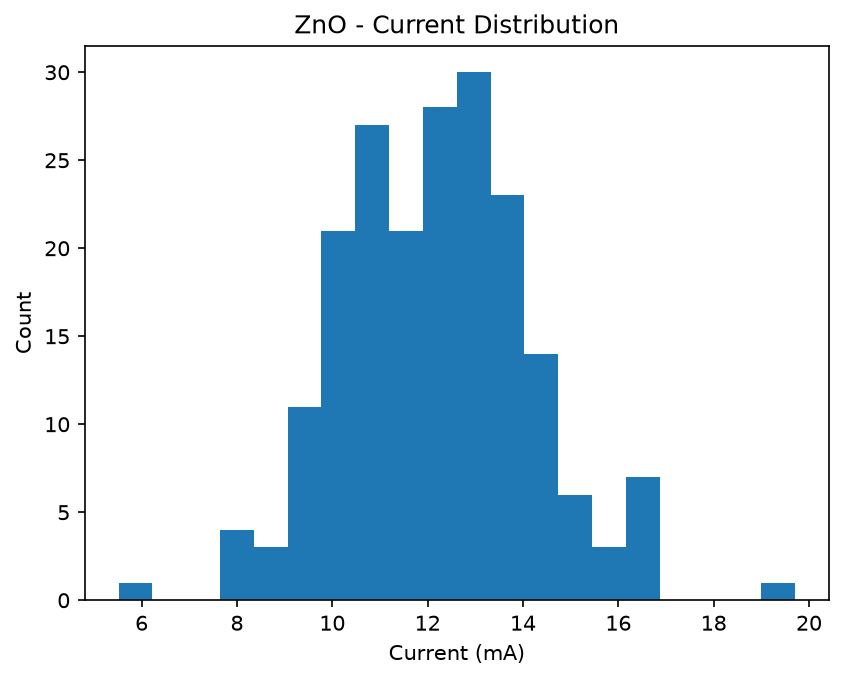

← Retour
Analyse Python : ZnO non dopé
1. Spectre DRX - ZnO non dopé (002)

2. Tableau des données
| Échantillon |
2θ (002) |
Intensité (u.a.) |
Taille cristallite (nm) |
| ZnO non dopé |
34.42° |
1850 |
28.5 |
| ZnO:Al 1% |
34.48° |
1620 |
24.3 |
| ZnO:Al 3% |
34.55° |
1405 |
21.7 |
3. Tension en fonction du temps

4. Résistance en fonction de la température

5. Histogramme du courant

6. Ancien spectre (archive)